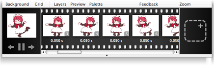

Making an animation
New to Pixen 3 is animation. You can create and edit a sequence of images just like you would an individual one, with Pixen's full breadth of features.

To make an animation:
Use the File > New Animation... menu item.
or
Convert an image into an animation with the Animation > Create Animation from Image menu item.
Once you've created an animation, you can make new frames with the dotted plus button on the right side of the filmstrip. Click a frame to start editing it; double-click the duration underneath a frame to change it.
When you're ready to save your animation, you can do so in either Pixen's animation format or as an animated .gif. You can also export to a Quicktime movie, series of images or as a sprite sheet.